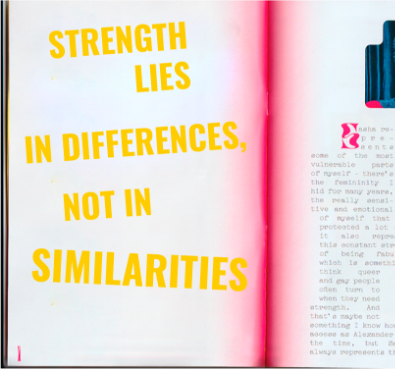
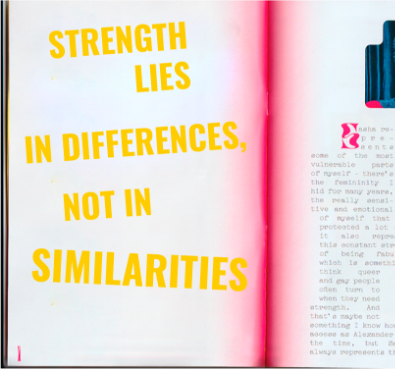

Psicólogo (CRP 07/25585) e Mestre em Psicologia Social pela PUCRS, além de especialista em Psicoterapias Cognitivo-comportamentais. É pesquisador de cognição social e realiza palestras, treinamentos e workshops sobre este e outros temas relativos à diversidade sexual e de gênero em corporações, instituições de ensino e entidades governamentais.
Durante anos, foi paciente de um modelo de terapia que, em vez de trabalhar nas questões que o levaram a buscar apoio psicológico, fizeram com que fosse submetido a tentativas de reversão de sua orientação sexual, como se ela não fosse natural. A partir dessa experiência terrível, produziu um estudo de Mestrado que inspirou a produção de seu Livro ‘Cura Gay’ - um retrato cientifico do funcionamento das terapias conversivas no Brasil. Uma parte de sua pesquisa foi publicado em uma edição especial de orientações sexuais e identidades de gênero na revista cientifica do Conselho Federal de Psicologia.
Jean Ícaro reside em SP, onde também atua como psicólogo clínico online e presencial, especialmente para a população LGBTQI+.
 

Cura gay é inspirado em uma pesquisa cientifica com 692 psicólogos(as) que se dispuseram a contar sobre a forma como lidam com os temas de sexualidade e gênero em suas clínicas. Através de dados informativos em primeira mão, a obra revela a grande frequência das terapias que pretendem converter pessoas lésbicas, gays e bissexuais, além dos rótulos psicológicos negativos atribuídos aos pacientes, que já chegam fragilizados(as). O livro traz à tona uma realidade ignorada, oferecendo discussões teóricas com informações atualizadas e baseadas em evidências.
Cura gay já está à venda! Adquira o livro
antecipadamente e obtenha a kits exclusivos
Cura gay é inspirado em uma pesquisa cientifica com 692 psicólogos(as) que se dispuseram a contar sobre a forma como lidam com os temas de sexualidade e gênero em suas clínicas. Através de dados informativos em primeira mão, a obra revela a grande frequência das terapias que pretendem converter pessoas lésbicas, gays e bissexuais, além dos rótulos psicológicos negativos atribuídos aos pacientes, que já chegam fragilizados(as). O livro traz à tona uma realidade ignorada, oferecendo discussões teóricas com informações atualizadas e baseadas em evidências.
Cura gay já está à venda! Adquira o livro
antecipadamente e obtenha a kits exclusivos
Treinamento básico e avançado para profissionais de saúde para
atendimento e acolhimento da população LGBTQI+
Boas práticas de profissionais de saúde mental em relação à
diversidade sexual e de gênero
Conferências para cursos de graduação e pós-graduação
Jean Ícaro faz parte da consultoria Diversidades in company, que tem como força motriz pesquisas recentes em cognição social centradas em espaços corporativos, com foco na construção ou ampliação de políticas de contratação, retenção e estratégias de negócios.
ENTRAR EM CONTATO